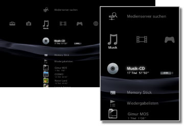

Musik > Musik-Kategorie
Musik-Kategorie
Die folgenden Icons werden unter  (Musik) angezeigt. Welche Icons angezeigt werden, hängt von den Nutzungsbedingungen ab.
(Musik) angezeigt. Welche Icons angezeigt werden, hängt von den Nutzungsbedingungen ab.

 |
(Name des Titels) | Anzeigen des Mini-Kontrollmenüs. Dieses Icon wird nur angezeigt, wenn Musikinhalte wiedergegeben werden. |
|---|---|---|
 |
Medienserver suchen | Starten einer Suche nach DLNA-Medienservern im gleichen Netzwerk. |
 |
Medienserver | Herstellen einer Verbindung mit DLNA-Medienservern und Wiedergeben der dort gespeicherten Musik. Die eingeblendeten Icons hängen vom Typ des Servers ab. |
 |
(Name des Titels) | Wiedergeben einer Super Audio CD. |
 |
(CD-Name) | Wiedergeben einer Audio-CD. |
 |
Daten-Disc | Wiedergeben von Musikdateien auf kompatiblen, bespielbaren Disc-Datenträgern, wie z. B. auf einer CD-R oder DVD-R. |
|
DSD-Disk | Wiedergeben von Musikdateien im DSD-Format auf kompatiblen Disc-Datenträgern, wie z. B. auf einer DVD-R. |
 |
Memory Stick™ | Wiedergeben von Musikdateien auf einem Memory Stick™-Datenträger.* |
| SD Memory Card | Wiedergeben von Musikdateien auf einer SD Memory Card.* | |
 |
CompactFlash® | Wiedergeben von Musikdateien auf einem CompactFlash®-Datenträger.* |
 |
PSP™ (PlayStation®Portable) | Wiedergeben von Musikdateien auf einem Memory Stick™-Datenträger eines PSP™-Systems. |
 |
PSP™(PlayStation®Portable) | Wiedergeben von Musikdateien im Systemspeicher des PSP™go-Systems. |
 |
Digitalkamera | Wiedergeben von Musikdateien auf einer Digitalkamera. |
 |
WALKMAN®/ATRAC Audio Device (WALKMAN®) | Wiedergeben von Musikdateien, die auf einem WALKMAN®/ATRAC Audio Device (WALKMAN®) gespeichert sind. |
 |
ATRAC Audio Device | Wiedergeben von Musikdateien, die auf einem ATRAC Audio Device gespeichert sind. |
 |
USB-Gerät | Wiedergeben von Musikdateien auf einem USB-Massenspeichergerät. |
 |
Wiedergabelisten | Sie können Wiedergabelisten erstellen oder vorhandene Wiedergabelisten bearbeiten oder wiedergeben. |
 |
(Ordner) | Dieses Icon wird bei Ordnern angezeigt, die mit einem PC auf dem Datenträger erstellt wurden. |
 |
(auf der Festplatte gespeicherte Dateien) | Wiedergeben von Musikdateien auf der Festplatte des PS3™-Systems. Wenn Bilddateien vorhanden sind, werden Miniaturbilder angezeigt. |
| * |
Bei einigen Modellen ist ein geeigneter USB-Adapter (nicht mitgeliefert) erforderlich, um Datenträger nutzen zu können. Wenn ein USB-Adapter verwendet wird, werden Datenträger als |
|---|
 (USB-Gerät) angezeigt.
(USB-Gerät) angezeigt.Anmerkungen
- Einzelheiten zu DLNA siehe
 (Einstellungen) >
(Einstellungen) >  (Netzwerk-Einstellungen) > [Verbindung mit dem Medienserver] in diesem Handbuch.
(Netzwerk-Einstellungen) > [Verbindung mit dem Medienserver] in diesem Handbuch. - In seltenen Fällen kann es vorkommen, dass Disks und andere Datenträger auf dem PS3™-System nicht einwandfrei wiedergegeben werden. Dies ist hauptsächlich auf Abweichungen im Herstellungsverfahren oder bei der Software-Codierung zurückzuführen.
- Wenn Audiosignale von Super Audio CDs über den DIGITAL OUT (OPTICAL)-Anschluss des Systems ausgegeben werden, erfolgt eine einfache Wiedergabe (Wiedergabe mit 44,1 kHz und 16 Bit).
Hinweis
Super Audio CDs können auf einigen PS3™-Systemen nicht abgespielt werden. Näheres dazu finden Sie unter [Typen abspielfähiger Discs].